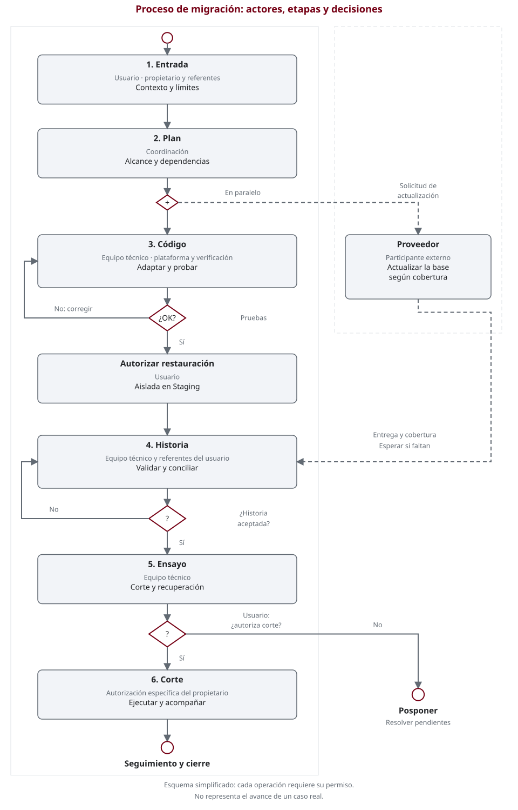

Procedimiento
El recorrido tiene seis etapas. Se trabaja en ciclos pequeños: si una prueba falla, se corrige y se repite; si falta una decisión, se pausa la tarea afectada. El corte se planifica desde el inicio, pero se autoriza al final.
El proceso de un vistazo
Diagrama tipo BPMN simplificado: los carriles indican actores, los rectángulos tareas, los rombos decisiones y los círculos inicio o fin. Las líneas discontinuas representan intercambios con el proveedor. Es una ayuda de lectura; no es un modelo ejecutable ni una especificación BPMN completa.

Abrir el diagrama completo. Las etapas siguientes son su equivalente en texto.

1. Entrada: acordar qué se va a migrar
Usuario y coordinación. El usuario entrega versiones, edición, procesos críticos, fuentes permitidas y límites. Coordinación revisa la información y devuelve preguntas, responsables y una propuesta de alcance.
Se avanza con: entrada revisada y permisos explícitos. Sin una respuesta necesaria, la tarea queda pendiente; tener acceso no autoriza modificar el sistema.
2. Plan: inventariar y decidir
Coordinación y equipo técnico, con el proveedor. Se contrasta lo instalado con el código disponible, incluyendo Studio, módulos de terceros y dependencias auto-instalables. Se decide por módulo: adaptar, usar una versión existente, reemplazar, retirar o investigar. El dueño funcional acepta el impacto de reemplazos o retiradas.
En paralelo, el proveedor confirma la ruta de actualización de la base, su cobertura y exclusiones. Un nombre de módulo similar no demuestra equivalencia ni conversión de datos.
Se avanza con: inventario, decisiones, orden de trabajo y pruebas esperadas. Las incógnitas tienen pregunta, rol decisor y condición de desbloqueo.
3. Código: adaptar y probar por grupos
Equipo técnico; coordinación organiza las entregas. Primero se adaptan las dependencias compartidas y después los módulos que las utilizan. Se revisan API, vistas, permisos y pruebas. Cada grupo se prueba en Development aislado y autorizado, sin efectos en correo, bancos, servicios fiscales ni otras integraciones.
Se avanza con: resultados de instalación, permisos y escenarios acordados. Un fallo vuelve al ciclo de adaptación; una dependencia fuera del alcance vuelve a decisión. Con varios desarrolladores o agentes, se usan archivos exclusivos y espacios de trabajo aislados.
4. Historia: validar la copia migrada
Equipo técnico y responsables funcionales/contables; el proveedor aporta la entrega. Se necesita la base actualizada y autorización específica para restaurarla de forma aislada en Staging. Antes de probar se acuerdan valores esperados y tolerancias.
Se contrastan saldos, pagos, impuestos, stock, documentos, numeraciones y permisos según el alcance. Los referentes explican y aceptan las diferencias; una base nueva no sustituye esta prueba.
Se avanza con: conciliaciones registradas y aceptación humana. Sin base, permiso o criterios, esta etapa espera; no se presume su resultado a partir de las pruebas de código.
5. Ensayo: comprobar corte y recuperación
Equipo técnico, plataforma y usuario. Se ensayan, bajo autorización, la ventana, el congelamiento de escrituras, las verificaciones y la recuperación. Se consideran las escrituras posteriores y los efectos externos, no solo los archivos.
Se avanza con: tiempos y límites observados, recuperación comprobada, responsables y plan de seguimiento. Un ensayo fallido se corrige antes de proponer producción.
6. Corte: decidir, ejecutar y acompañar
El propietario decide; el equipo autorizado ejecuta. Se presentan las evidencias, fallos, comprobaciones omitidas y riesgos residuales. La aprobación funcional o contable no reemplaza la autorización específica de corte. Si no se autoriza, se pospone.
Cierre: verificaciones posteriores, seguimiento de incidencias y aceptación registrada. Ante pérdida de aprobación o un fallo crítico, se detiene y se consulta el plan aprobado, sin improvisar reparaciones ni reversión.
Qué recibe el usuario en cada entrega
Un resumen breve: qué se hizo, qué se comprobó, qué falta y qué decisión se necesita. Los resultados se marcan como aprobados, fallidos o no comprobados, con su contexto. No se confunde avance de código con datos aceptados ni con producción autorizada.
Siguiente paso: complete las Instrucciones del usuario. Para profundizar, se conservan las plantillas y la lista de validación como referencias fuera del menú principal.